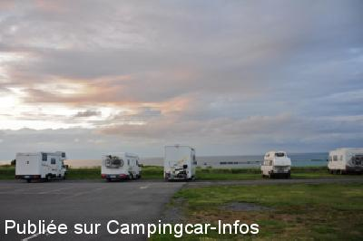
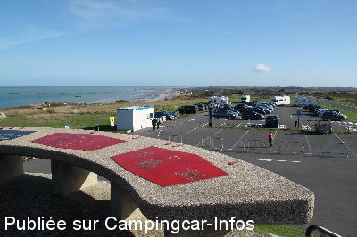
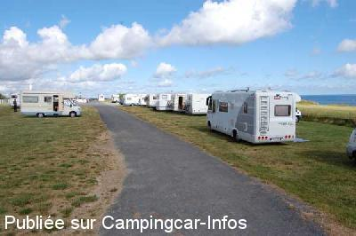
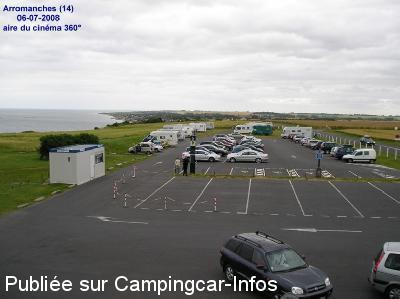

ASN = Aire de services avec stationnement nuit possible de :
ARROMANCHES LES BAINS
(N° 556)
Accès/adresse :
D514
Parking du Cinéma Circulaire
14117 ARROMANCHES LES BAINS
Parking du Cinéma Circulaire
14117 ARROMANCHES LES BAINS
Latitude : (Nord) 49.33924° Décimaux ou 49° 20′ 21′′
Longitude : (Ouest) -0.61419° Décimaux ou 0° 36′ 51′′
Tarif : 2015
Stationnement par tranche de 12 h : 6 €
Services : 2 €
Départ avant 9 h ou supplément : 6 €
Services :


Autres informations :
Tél : +33(0)231 223 645
http://www.ot-arromanches.fr/

Le 23/03/2014 par maxmweiss

Le 10/12/2013 par Eric le belge

Le 17/08/2008 par roland.luc

Le 13/07/2008 par pomme.luma
de
endeavour
le 24/07/2015 :
§ bonjour
pour info maintenant sur ce parking une borne pour camping car a était installé vidange wc et eau payantes 2 € à l'agent municipal
§ bonjour
pour info maintenant sur ce parking une borne pour camping car a était installé vidange wc et eau payantes 2 € à l'agent municipal
de
La gestion des aires
le 27/05/2014 :
Bonjour,
Un malaise règne sur cette aire, nous ne cherchons pas à savoir qui a raison, qui à tort.
La situation est connue depuis très longtemps.
Des échanges houleux entre C-cariste et l'agent.
CCi ne peut pas servir de ring.
Il serait bien d'en informer l'Office de Tourisme ou la mairie.
Nous avions déjà pris contact avec l'OT pour signaler ce problème.
Hors il apparait que ce problème n'est toujours pas solutionné.
A partir de ce jour nous n'afficherons plus les commentaires concernant ce problème.
Merci de votre compréhension.
La gestion des aires
Bonjour,
Un malaise règne sur cette aire, nous ne cherchons pas à savoir qui a raison, qui à tort.
La situation est connue depuis très longtemps.
Des échanges houleux entre C-cariste et l'agent.
CCi ne peut pas servir de ring.
Il serait bien d'en informer l'Office de Tourisme ou la mairie.
Nous avions déjà pris contact avec l'OT pour signaler ce problème.
Hors il apparait que ce problème n'est toujours pas solutionné.
A partir de ce jour nous n'afficherons plus les commentaires concernant ce problème.
Merci de votre compréhension.
La gestion des aires